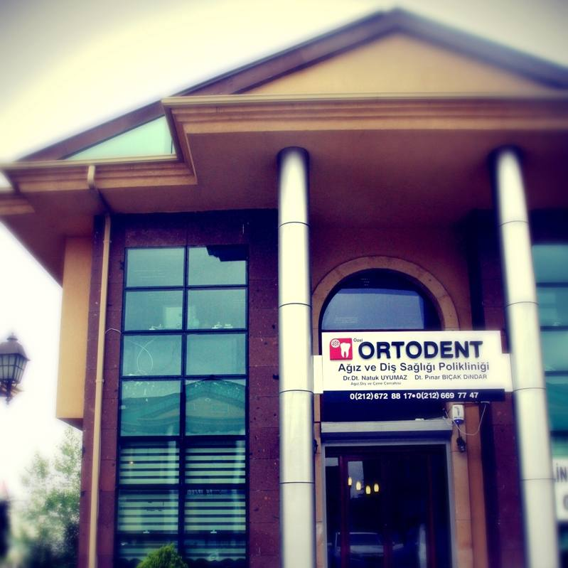
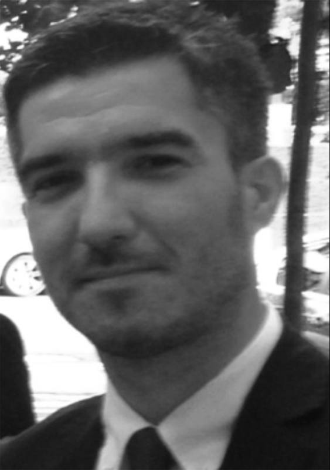
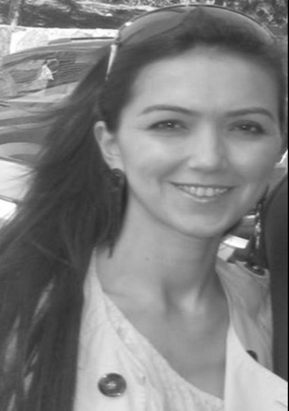

2008'den beri aynı yerde, aynı ekiple
Ortodent Ağız ve Diş Sağlığı Polikliniği 2008 yılında kurulmuş ve 2012 yılı itibariyle Bahçeşehir KC bankalar caddesinde yeni binasında hizmet vermeye başlamıştır.
Ortodent, başta implantoloji olmak üzere ortodonti, estetik diş hekimliği, pedodonti, periodontoloji ve endodonti alanlarında bütünsel servis sunan, yeni nesil bir diş polikliniğidir.
Bünyesinde diş eti ve ağız hastalıkları tedavisi, acil diş hekimliği, çene cerrahisi, radyoloji gibi hizmetlere de yer veren Ortodent, farklı alanlarda uzmanlaşmış deneyimli hekim kadrosu, sıcak ve samimi personeli ve yenilikçi servis anlayışı ile insana odaklanan ayrıcalıklı bir sağlık merkezidir.
Ortodent Ağız ve Diş Sağlığı Polikliniği, İstanbul'un çeşitli bölgelerinde poliklinik hizmeti sunmuş bir hekim kadrosuna ve işletme anlayışına sahiptir. Bu nedenle bilimsel altyapısı, eşsiz bir işletmecilik tecrübesi ile tamamlanır.

Kliniğimizde kimler var?

Dr. Dt. Bahadır Dindar
1981 yılında İstanbul’da dünyaya gelen Dr. Bahadır DİNDAR orta öğretimini Bahçelievler Adnan Menderes Anadolu Lisesinde tamamlamıştır. Diş Hekimliği eğitimini Marmara Üniversite’sinde tamamladıktan sonra 2005 yılında İstanbul Üniversitesi Diş Hekimliği Fakültesinde doktora çalışmalarına başlamış ve 2011 yılında bilim doktoru ve Ağız, Diş ve Çene Cerrahisi Uzmanı olmuştur. 2 sene kadar Yrd. Doç. Dr. Olarak akademik hayatına devam eden Dr. Bahadır DİNDAR şu anda özel sektörde hizmet vermektedir. Bilim kurgu filmleri ve zıpkın ile balık avı özel zevkleridir. Evli ve 1 kız babasıdır. İyi derecede İngilizce bilmektedir.
One of the best decisions i have made is to choose Dentologist as my dental consultant!
One of my friend recommeded to visit Dentologist for my son dental issues and i am happy with the treatment received here.

Dt. Pınar Nesrin Dindar
Diş hekimi Pınar Nesrin Dindar İstanbul doğumludur. Pertevniyal Lisesini bitirdikten sonra 1999 yılında Marmara Üniversitesine başlamış ve 2005 yılında diş hekimi ünvanını almıştır. 2008 yılında Ortodent Ağız Diş Sağlığı Polikliniğini kurana kadar çeşitli kurumlarda görev yapmıştır. Halen kurucusu olduğu klinikte estetik diş hekimliği uygulamaları başta olmak üzere hizmet vermektedir. Fitness ile ilgilenen Pınar Nesrin DİNDAR 1 kız annesidir. İngilizce bilmektedir.
One of the best decisions i have made is to choose Dentologist as my dental consultant!
One of my friend recommeded to visit Dentologist for my son dental issues and i am happy with the treatment received here.
Randevu için bir telefon yeterli
Muayene ve tedavi planı için bizi arayabilir ya da WhatsApp'tan yazabilirsiniz.